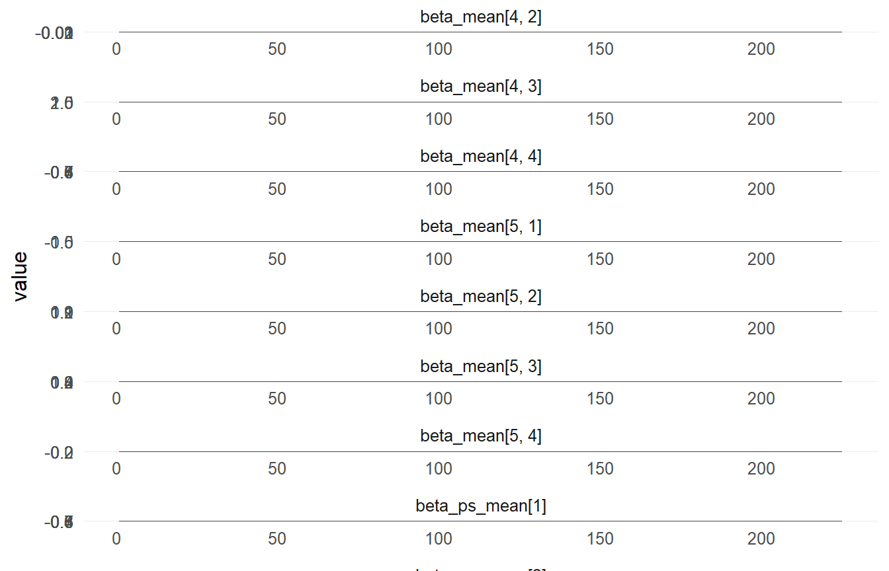
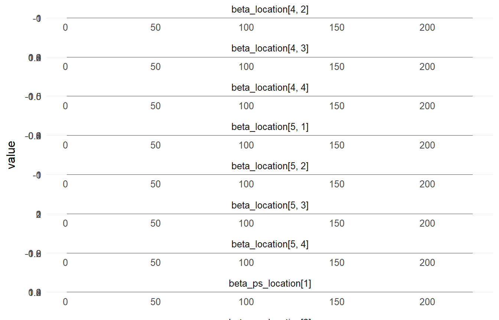
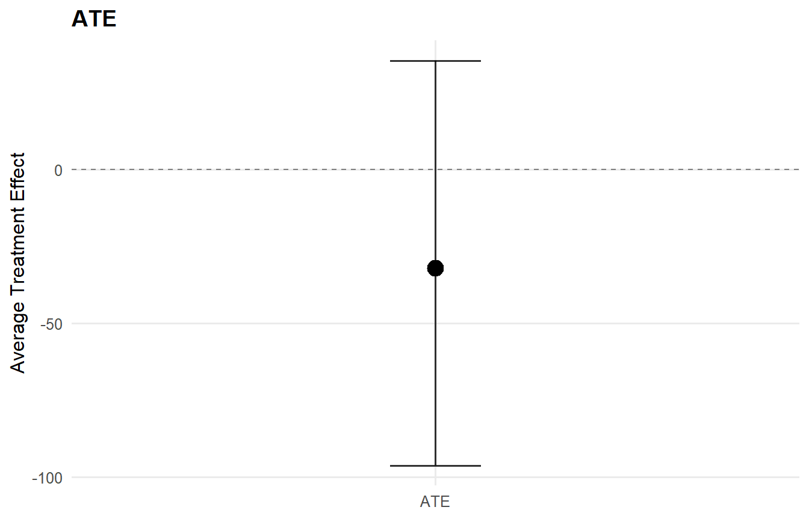
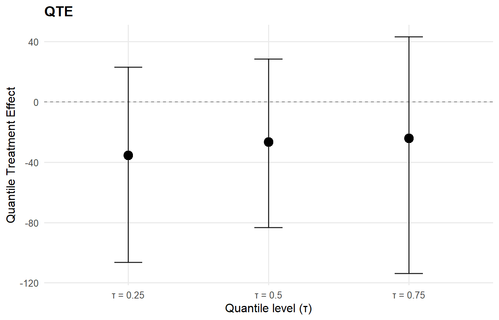

Code
data("mtcars", package = "datasets")
df <- mtcars
y <- df$mpg
X <- df[, c("wt", "hp")]
X <- as.data.frame(X)This vignette documents how to construct and run NIMBLE models using the low-level building blocks exported by CausalMixGPD. The intended audience is advanced users who want full control of the model specification while still reusing the package’s NIMBLE-ready distributions (mixture kernels and bulk-tail splices) and the standard NIMBLE compilation and MCMC workflow.
The examples emphasize transparency. Each model is specified in nimbleCode{}; constants, data, and initial values are stated explicitly; and the model is compiled and sampled using the canonical NIMBLE sequence.
The vignette covers:
For the underlying “where each option lives” map (core customization surface + extension points), see Theory: Customization maps + extension points.
A manual stick-breaking (SB) Normal mixture using dNormMix as the likelihood.
A spliced bulk-tail model (SB + Amoroso + GPD) in which CausalMixGPD generates the model code, while the compilation and sampling steps are carried out explicitly to facilitate inspection.
A causal (two-arm) model built via bundle(), followed by downstream summaries via S3 methods such as predict(), ate()/qte() (marginal), att()/qtt() (treated-only), and cate()/cqte() (conditional; requires X).
Throughout, the focus is on reproducible model construction and on using the exported NIMBLE distributions directly in the likelihood. In this setting, a ones/zeros trick is not required.
dNormMixIn this first example we write an SB mixture model by hand and use the exported dNormMix() nimbleFunction as the per-observation log-likelihood. The point is to show that CausalMixGPD kernels are ordinary NIMBLE components: you can call them inside your own model code, monitor whatever nodes you like, and control the MCMC configuration exactly as you would in a standalone NIMBLE workflow.
NIMBLE can work with user-defined distributions, but for a vignette it is often easier to avoid registration and keep everything “plain” model code. CausalMixGPD already exposes the mixture and MixGPD building blocks as NIMBLE distributions (e.g., dNormMix for a Normal mixture and dNormMixGpd for the spliced bulk+GPD version). That means you can write the likelihood directly in nimbleCode using y[i] ~ dNormMix(...) or y[i] ~ dNormMixGpd(...)–no ones/zeros trick is needed here.
code_sb <- nimble::nimbleCode({
alpha ~ dgamma(1, 1)
for (k in 1:(K - 1)) {
v[k] ~ dbeta(1, alpha)
}
v[K] <- 1
w[1] <- v[1]
for (k in 2:K) {
w[k] <- v[k] * prod(1 - v[1:(k - 1)])
}
for (k in 1:K) {
mu[k] ~ dnorm(0, sd = 5)
sigma[k] ~ dunif(0.1, 5)
}
for (i in 1:N) {
y[i] ~ dNormMix(w = w[1:K], mean = mu[1:K], sd = sigma[1:K])
}
}). <- utils::capture.output({
Rmodel_sb <- nimble::nimbleModel(
code = code_sb,
constants = constants_sb,
data = data_sb,
inits = inits_sb()
)
conf_sb <- nimble::configureMCMC(
Rmodel_sb,
monitors = c("alpha", "v", "w", "mu", "sigma")
)
Rmcmc_sb <- nimble::buildMCMC(conf_sb)
Cmodel_sb <- nimble::compileNimble(Rmodel_sb, showCompilerOutput = FALSE)
Cmcmc_sb <- nimble::compileNimble(Rmcmc_sb, project = Rmodel_sb, showCompilerOutput = FALSE)
samples_sb <- nimble::runMCMC(
Cmcmc_sb,
niter = mcmc$niter,
nburnin = mcmc$nburnin,
thin = mcmc$thin,
nchains = mcmc$nchains,
setSeed = mcmc$seed
)
})
. <- utils::capture.output({
NULL
}, type = "message")head(samples_sb[, 1:min(6, ncol(samples_sb))])
## alpha mu[1] mu[2] mu[3] sigma[1] sigma[2]
## [1,] 0.5576410 19.07945 1.743957 -2.522097 4.700711 4.101077
## [2,] 0.9291161 20.09347 3.080899 -3.562465 4.700711 4.324865
## [3,] 0.9291161 19.85805 4.698299 -2.148634 4.700711 4.844133
## [4,] 0.9291161 19.81986 5.391510 -2.005636 4.700711 4.835995
## [5,] 0.5027894 20.37744 4.042504 -1.893154 4.871431 3.787599
## [6,] 0.5027894 20.37744 1.625299 -1.872374 4.871431 2.736108
summary(samples_sb[, c("alpha", "mu[1]", "mu[2]", "mu[3]")])
## alpha mu[1] mu[2] mu[3]
## Min. :0.008827 Min. :17.43 Min. :-12.143 Min. :-13.3162
## 1st Qu.:0.301743 1st Qu.:18.98 1st Qu.: -2.048 1st Qu.: -2.6323
## Median :0.379184 Median :19.56 Median : 1.070 Median : -0.1869
## Mean :0.481507 Mean :19.54 Mean : 1.018 Mean : 0.7266
## 3rd Qu.:0.620964 3rd Qu.:20.19 3rd Qu.: 4.116 3rd Qu.: 3.9023
## Max. :1.700272 Max. :21.91 Max. : 16.187 Max. : 18.1365For comparison, we build a bundle for the same SB Normal mixture and use CausalMixGPD’s S3 methods for posterior inference.
CausalMixGPD bundle Field Value Backend Stick-Breaking Process Kernel Normal Distribution Components 3 N 32 X NO GPD FALSE Epsilon 0.025
contains : code, constants, data, dimensions, inits, monitors
CausalMixGPD bundle summary Field Value Backend Stick-Breaking Process Kernel Normal Distribution Components 3 N 32 X NO GPD FALSE Epsilon 0.025
Parameter specification block parameter mode level prior link meta backend info model sb
meta kernel info model normal
meta components info model 3
meta N info model 32
meta P info model 0
concentration alpha dist scalar gamma(shape=1, rate=1)
bulk mean dist component (1:3) normal(mean=0, sd=5)
bulk sd dist component (1:3) gamma(shape=2, rate=1)
notes
stochastic concentration iid across components iid across components
Monitors n = 4 alpha, w[1:3], mean[1:3], sd[1:3]
MixGPD fit | backend: Stick-Breaking Process | kernel: Normal Distribution | GPD tail: FALSE n = 32 | components = 3 | epsilon = 0.025 MCMC: niter=600, nburnin=150, thin=2, nchains=1 Fit Use summary() for posterior summaries; plot() for diagnostics; predict() for predictions.
MixGPD summary | backend: Stick-Breaking Process | kernel: Normal Distribution | GPD tail: FALSE | epsilon: 0.025 n = 32 | components = 3 Summary Initial components: 3 | Components after truncation: 1
Summary table parameter mean sd q0.025 q0.500 q0.975 ess weights[1] 0.972 0.061 0.756 1 1 11.573 alpha 0.421 0.302 0.073 0.348 1.132 46.952 mean[1] 19.332 1.137 17.025 19.323 21.623 153.799 sd[1] 0.031 0.007 0.018 0.03 0.045 225
The second example adds a GPD tail. Rather than writing the full spliced model by hand, we let bundle() generate the NIMBLE code and the supporting objects (constants, data, inits, monitors). The “customization” part is that we then treat those outputs as if you had written them yourself: we construct the nimbleModel, configure and compile the MCMC, run it, and inspect the samples. This is a good pattern when you want a reproducible code generator, but still need low-level access for debugging or extensions.
param_specs_crp <- list(
bulk = list(
loc = list(
mode = "dist",
dist = "normal",
args = list(mean = 0, sd = 2)
),
scale = list(
mode = "dist",
dist = "gamma",
args = list(shape = 2, rate = 1)
),
shape1 = list(mode = "fixed", value = 1)
),
gpd = list(
threshold = list(
mode = "dist",
dist = "gamma",
args = list(shape = 2, rate = 1)
),
tail_scale = list(
mode = "dist",
dist = "gamma",
args = list(shape = 2, rate = 1)
)
)
)X_crp <- NULL
bundle_crp <- bundle(
y = y,
X = X_crp,
backend = "sb",
kernel = "amoroso",
GPD = TRUE,
components = 5,
param_specs = param_specs_crp,
mcmc = mcmc
)
code_crp <- bundle_crp$code$nimble
constants_crp <- bundle_crp$constants
data_crp <- bundle_crp$data
inits_crp <- if (is.function(bundle_crp$inits_fun)) bundle_crp$inits_fun else bundle_crp$inits. <- utils::capture.output({
Rmodel_crp <- nimble::nimbleModel(
code = code_crp,
constants = constants_crp,
data = data_crp,
inits = if (is.function(inits_crp)) inits_crp() else inits_crp
)
conf_crp <- nimble::configureMCMC(
Rmodel_crp,
monitors = bundle_crp$monitors
)
if (!is.null(conf_crp$samplerConfs) && length(conf_crp$samplerConfs) > 0) {
for (i in seq_along(conf_crp$samplerConfs)) {
ctl <- conf_crp$samplerConfs[[i]]$control
if (is.null(ctl)) ctl <- list()
if (is.null(ctl$checkConjugacy)) ctl$checkConjugacy <- FALSE
conf_crp$samplerConfs[[i]]$control <- ctl
}
}
Rmcmc_crp <- nimble::buildMCMC(conf_crp)
Cmodel_crp <- nimble::compileNimble(Rmodel_crp, showCompilerOutput = FALSE)
Cmcmc_crp <- nimble::compileNimble(Rmcmc_crp, project = Rmodel_crp, showCompilerOutput = FALSE)
samples_crp <- nimble::runMCMC(
Cmcmc_crp,
niter = mcmc$niter,
nburnin = mcmc$nburnin,
thin = mcmc$thin,
nchains = mcmc$nchains,
setSeed = mcmc$seed
)
})
. <- utils::capture.output({
NULL
}, type = "message")head(samples_crp[, 1:min(6, ncol(samples_crp))])
## alpha loc[1] loc[2] loc[3] loc[4] loc[5]
## [1,] 0.9727202 2.516981 2.5580666 -1.1593237 -2.80933073 1.566259
## [2,] 1.4318106 1.323337 1.9239954 -0.7109885 -2.34252282 2.055544
## [3,] 1.3683544 1.386733 0.8968113 -0.4767142 -1.17984151 1.224590
## [4,] 1.6118330 2.193194 0.2828832 0.3967577 -0.53403264 1.853557
## [5,] 0.7287362 2.420153 0.2828832 -0.5259092 -0.03916487 1.884394
## [6,] 0.8154086 1.528199 1.2713132 0.5715565 -0.50822394 3.046560MixGPD fit | backend: Stick-Breaking Process | kernel: Amoroso Distribution | GPD tail: TRUE n = 32 | components = 5 | epsilon = 0.025 MCMC: niter=600, nburnin=150, thin=2, nchains=1 Fit Use summary() for posterior summaries; plot() for diagnostics; predict() for predictions.
MixGPD summary | backend: Stick-Breaking Process | kernel: Amoroso Distribution | GPD tail: TRUE | epsilon: 0.025 n = 32 | components = 5 Summary Initial components: 5 | Components after truncation: 1
Summary table parameter mean sd q0.025 q0.500 q0.975 ess weights[1] 0.945 0.087 0.664 1 1 7.511 alpha 0.471 0.363 0.118 0.386 1.615 17.548 tail_scale 10.712 4.27 4.99 9.384 18.927 2.817 tail_shape -0.181 0.176 -0.584 -0.169 0.13 17.947 threshold 9.003 4.666 0.957 10.062 15.226 1.742 loc[1] 4.465 2.381 0.718 4.18 10.298 9.305 scale[1] 8.198 5.612 0.554 7.176 17.084 5.486 shape1[1] 1 0 1 1 1 0 shape2[1] 4.042 2.218 0.547 3.878 9.384 19.021
pred_crp_mean <- predict(fit_crp, type = "mean", interval = "credible", workers = max_workers)
pred_crp_q90 <- predict(fit_crp, type = "quantile", p = 0.90, interval = "credible", workers = max_workers)
head(pred_crp_mean$fit)
## id estimate lower upper
## 1 1 17.48439 12.7235 21.38807
head(pred_crp_q90$fit)
## id index estimate lower upper
## 1 1 0.9 27.99829 23.97517 34.26093ess_crp <- ess_summary(fit_crp)
print(ess_crp)
## ESS summary (ESS/sec)
## arm param chain ess seconds ess_per_sec
## single alpha chain1 17.548 0.44 39.881
## single tail_shape chain1 17.947 0.44 40.789
## single scale[1] chain1 5.486 0.44 12.469
## single alpha pooled 17.548 0.44 39.881
## single tail_shape pooled 17.947 0.44 40.789
## single scale[1] pooled 5.486 0.44 12.469Finally, we switch from “one distribution for everyone” to a two-arm causal setup. CausalMixGPD’s causal bundle wraps (i) an outcome model for the treated arm, (ii) an outcome model for the control arm, and (iii) a propensity-score model (optional, but often useful). Once the sampler has run, the fitted object exposes high-level S3 methods so you can move from posterior samples to causal estimands with minimal friction–e.g., average treatment effects via ate() and quantile treatment effects via qte(), with treated-only counterparts att() / qtt() and conditional counterparts cate() / cqte(). For no-X fits, cate() / cqte() are unavailable. Marginal estimands (ate(), att(), qte(), qtt()) always use training data and ignore supplied newdata/y, while conditional estimands use newdata if provided and otherwise training X. R-mean is available via type = "rmean" for cate() / ate() / att() and via ate_rmean().
X_causal <- df[, c("wt", "hp", "qsec", "cyl")]
X_causal <- as.data.frame(X_causal)
T_ind <- df$am
param_specs_causal <- list(
trt = list(
bulk = list(
mean = list(
mode = "link",
link = "identity",
beta_prior = list(dist = "normal", args = list(mean = 0, sd = 2))
),
sd = list(
mode = "dist",
dist = "invgamma",
args = list(shape = 2, scale = 1)
)
)
),
con = list(
bulk = list(
location = list(
mode = "link",
link = "identity",
beta_prior = list(dist = "normal", args = list(mean = 0, sd = 2))
),
scale = list(
mode = "dist",
dist = "gamma",
args = list(shape = 2, rate = 1)
)
)
)
)CausalMixGPD causal bundle PS model: Bayesian logit (A | X) Field Treated Control Backend Stick-Breaking Process Stick-Breaking Process Kernel normal laplace Components 5 5 GPD tail FALSE FALSE Epsilon 0.025 0.025
Outcome PS included: TRUE n (control) = 19 | n (treated) = 13
CausalMixGPD causal bundle summary CausalMixGPD causal bundle PS model: Bayesian logit (A | X) Field Treated Control Backend Stick-Breaking Process Stick-Breaking Process Kernel normal laplace Components 5 5 GPD tail FALSE FALSE Epsilon 0.025 0.025
Outcome PS included: TRUE n (control) = 19 | n (treated) = 13
CausalMixGPD causal fit PS model: Bayesian logit (A | X) Outcome (treated): backend = sb | kernel = normal Outcome (control): backend = sb | kernel = laplace GPD tail (treated/control): FALSE / FALSE
– PS fit – CausalMixGPD PS fit model: logit
– Outcome fits – [control] MixGPD fit | backend: Stick-Breaking Process | kernel: Laplace Distribution | GPD tail: FALSE n = 19 | components = 5 | epsilon = 0.025 MCMC: niter=600, nburnin=150, thin=2, nchains=1 Fit Use summary() for posterior summaries; plot() for diagnostics; predict() for predictions.
[treated] MixGPD fit | backend: Stick-Breaking Process | kernel: Normal Distribution | GPD tail: FALSE n = 13 | components = 5 | epsilon = 0.025 MCMC: niter=600, nburnin=150, thin=2, nchains=1 Fit Use summary() for posterior summaries; plot() for diagnostics; predict() for predictions.

##
## === control ===
##
## === traceplot ===
pred_causal_mean <- predict(
causal_fit,
x = X_causal,
type = "mean",
interval = "credible",
workers = max_workers,
ndraws_pred = 200,
chunk_size = 10000
)
head(pred_causal_mean)
## id estimate lower upper ps
## 1 1 -22.67210 -56.19965 -37.10053 0.5098190
## 2 2 -23.04697 -56.11664 -37.66145 0.3673327
## 3 3 -16.70549 -40.68202 -31.16277 0.6671039
## 4 4 -22.39276 -53.27917 -37.97584 0.2529819
## 5 5 -40.84752 -101.90034 -60.35599 0.2699014
## 6 6 -21.27696 -49.30366 -36.73706 0.1616853ess_causal <- ess_summary(causal_fit)
print(ess_causal)
## ESS summary (ESS/sec)
## arm param chain ess seconds ess_per_sec
## control alpha chain1 32.997 0.06 549.956
## control scale[1] chain1 18.972 0.06 316.194
## control beta_ps_location[1] chain1 4.095 0.06 68.25
## control alpha pooled 32.997 0.06 549.956
## control scale[1] pooled 18.972 0.06 316.194
## control beta_ps_location[1] pooled 4.095 0.06 68.25
## treated alpha chain1 33.23 0.03 1107.681
## treated beta_ps_mean[1] chain1 1.959 0.03 65.308
## treated alpha pooled 33.23 0.03 1107.681
## treated beta_ps_mean[1] pooled 1.959 0.03 65.308ate_result <- ate(causal_fit, interval = "credible", nsim_mean = 50)
qte_result <- qte(causal_fit, probs = c(0.25, 0.5, 0.75), interval = "credible")
att_result <- att(causal_fit, interval = "credible", nsim_mean = 50)
qtt_result <- qtt(causal_fit, probs = c(0.25, 0.5, 0.75), interval = "credible")
ate_rmean_result <- ate_rmean(causal_fit, cutoff = 10, interval = "credible", nsim_mean = 50)
cate_result <- cate(causal_fit, newdata = X_causal[1:5, ], interval = "credible", nsim_mean = 50)
cqte_result <- cqte(causal_fit, probs = c(0.25, 0.5, 0.75), newdata = X_causal[1:5, ], interval = "credible")
att_rmean_result <- att(causal_fit, type = "rmean", cutoff = 10, interval = "credible", nsim_mean = 50)
cate_rmean_result <- cate(causal_fit, type = "rmean", cutoff = 10, newdata = X_causal[1:5, ], interval = "credible", nsim_mean = 50)
print(ate_result)ATE (Average Treatment Effect) Prediction points: 1 Conditional (covariates): NO Propensity score used: YES PS scale: logit Posterior mean draws: 50 Credible interval: credible (95%)
ATE estimates (treated - control): id mean lower upper 1 -32.154 -96.251 35.272
Prediction points: 1 Conditional: NO | PS used: YES Posterior mean draws: 50 Interval: credible (95%)
Model specification: Backend (trt/con): sb / sb Kernel (trt/con): normal / laplace GPD tail (trt/con): NO / NO
ATE statistics: Mean: -32.154 | Median: -32.154 Range: [-32.154, -32.154]
Credible interval width: Mean: 131.523 | Median: 131.523 Range: [131.523, 131.523]
RMCATE (Conditional Restricted Mean Treatment Effect) Prediction points: 32 Conditional (covariates): YES Propensity score used: YES PS scale: logit Posterior mean draws: 50 Credible interval: credible (95%)
RMCATE estimates (treated - control): id mean lower upper 1 -17.695 -65.018 11.262 2 -17.742 -64.951 11.352 3 -12.17 -48.478 13.998 4 -16.61 -62.415 13.603 5 -34.03 -115.333 5.736 6 -15.259 -58.254 14.417 … (26 more rows)
Prediction points: 32 Conditional: YES | PS used: YES Posterior mean draws: 50 Interval: credible (95%)
Model specification: Backend (trt/con): sb / sb Kernel (trt/con): normal / laplace GPD tail (trt/con): NO / NO
RMCATE statistics: Mean: -26.771 | Median: -20.854 Range: [-71.496, -2.815] SD: 17.563
Credible interval width: Mean: 100.095 | Median: 84.733 Range: [36.907, 217.242]
RMATT (Restricted Mean Treatment Effect on the Treated) Prediction points: 1 Conditional (covariates): NO Propensity score used: YES PS scale: logit Posterior mean draws: 50 Credible interval: credible (95%)
RMATT estimates (treated - control): id mean lower upper 1 -21.212 -73.244 10.109
RMCATE (Conditional Restricted Mean Treatment Effect) Prediction points: 5 Conditional (covariates): YES Propensity score used: YES PS scale: logit Posterior mean draws: 50 Credible interval: credible (95%)
RMCATE estimates (treated - control): id mean lower upper 1 -17.693 -64.995 11.211 2 -17.76 -65.033 11.31 3 -12.178 -48.47 13.954 4 -16.624 -62.45 13.593 5 -34.038 -115.466 5.808

